Solution
يتم وضع الصندوق 3 و 2 في المكان الأوسط
| 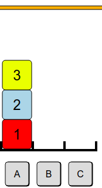 | 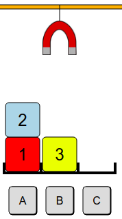 | 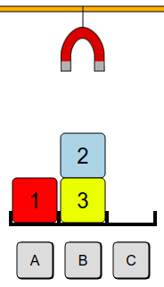 | 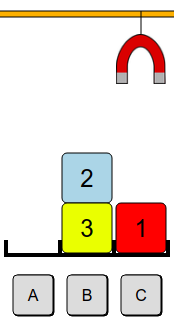 | 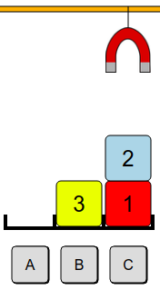 | 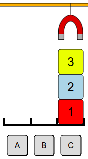 |
تستخدم المكانين الأوسطين لوضع 4 صناديق لتحرير الصندوق رقم 1. يجب وضع الصناديق الصغير فوق الصناديق الكبير مثل وضع 2 على 3 ووضع 4 على 5 وذلك لتسهيل وضعهم في المرحلة الأخيرة
| 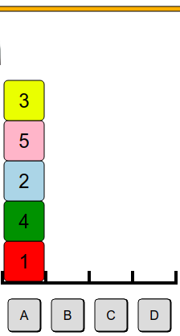 | 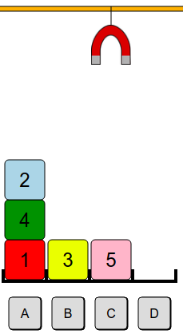 | 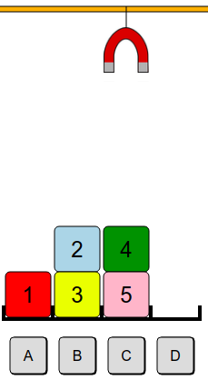 | 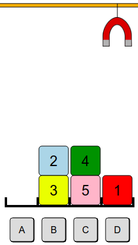 | 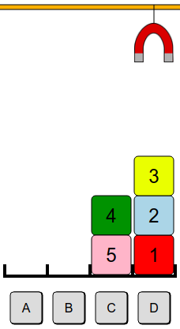 | 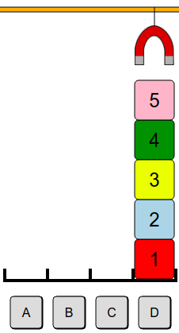 |
| 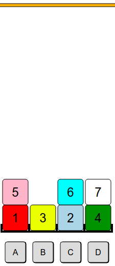 | 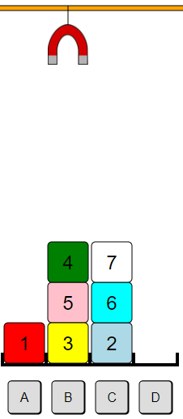 |
من أجل تحريك الصندوق 1 إلى أخر مكان يجب إزاحة الصناديق 5 و 4 و 7. لو وضعناهم مباشرة على الصناديق الوسطى سوف نحجب صندوق 2 و3 وسنضطر إلى إزاحتهم مرة أخرى.
| 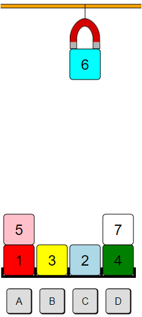 |
To avoid these many future displacements, it is necessary to anticipate and for example prepare the fast access to blocks 2 and 3 and in the right order. We will therefore remove the block 6, to be able to move the block 2 on the block 3.
You have to decide between putting block 6 above 5 or above 7.
It is much more interesting to put the block 6 above the block 5, because we can then place the blocks 7, 6, 5 and 4 on the stack C, in that order. This will allow their quick transfer later to the last stack.
Here are the key steps in the complete sequence :
| 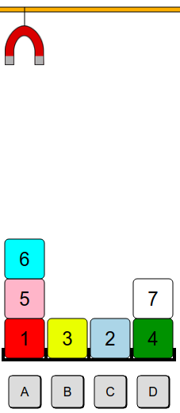 |

|
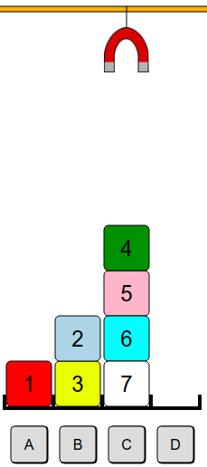 | 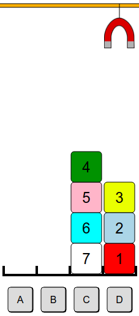 | 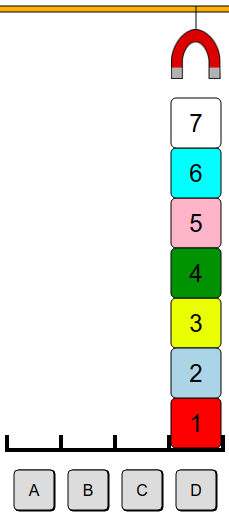 |
Another approach was to first move block 3 on stack C, to make room for blocks 7, 5 and 4 and place them in order. The suite is pretty easy.
It's computer science !
This subject involves what is called in information the notion of heuristic . At first, we do not know in which direction to go, but we can estimate that some shots are better than others. For example, it is better to avoid depositing a cube with a certain number above a cube with a smaller number.
Some computer programs use heuristic algorithms : rather than exploring all possibilities in any order, we will make "good choices" first, for example here we will first drop cubes on piles containing only higher number cubes, where possible.